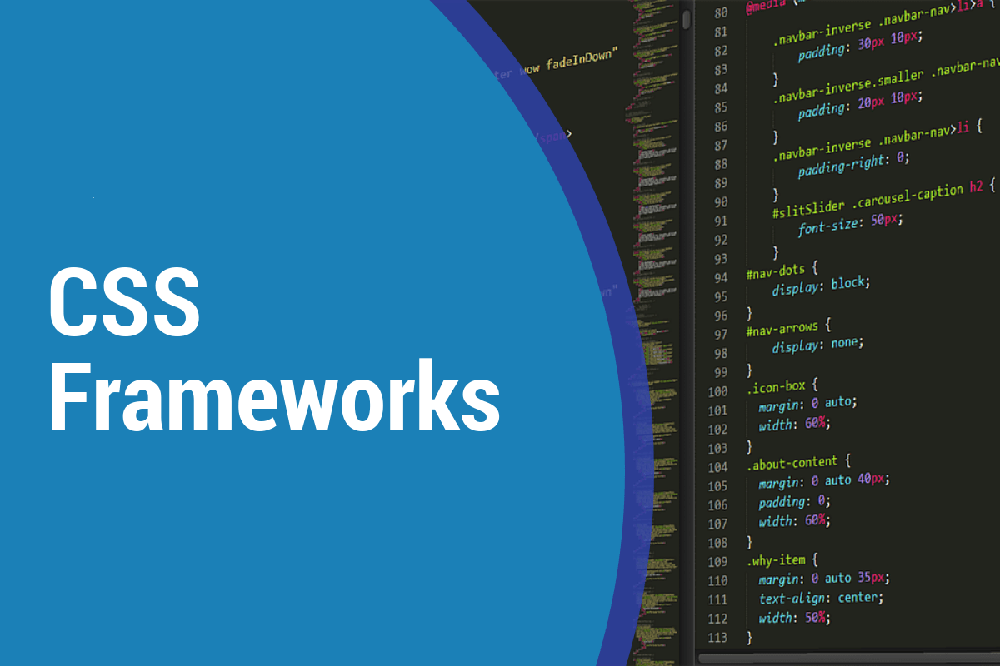
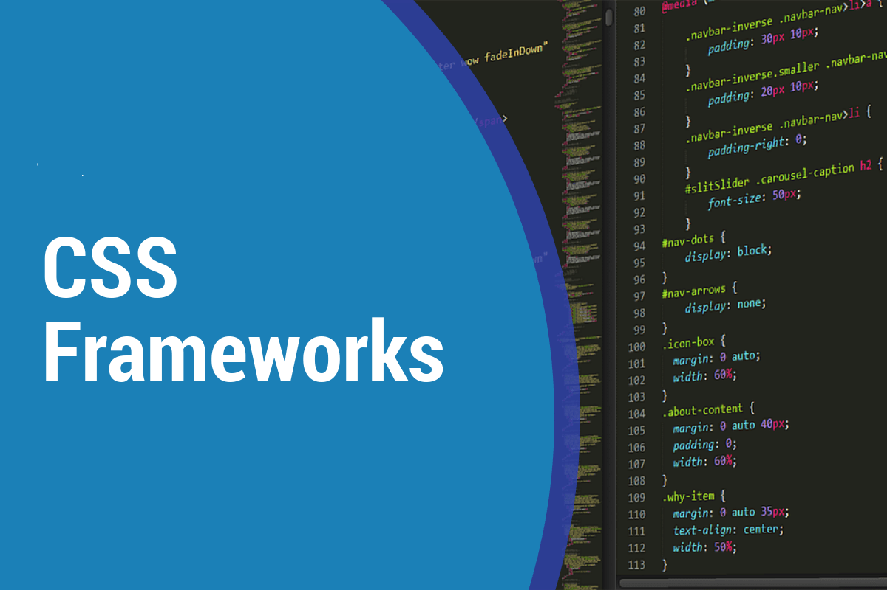

Frameworks CSS
Se las utiliza en las programaciones de aplicaciones como también se utiliza para programar y diseños en sitios web ya que son un conjunto de herramientas y estilos que nos permiten crear elementos únicos en un diseño.
En general la iniciativa es crear una base de información practica y eficaz, para dar un ligero aprendizaje tal que sea, constructivo para los estudiantes, en este caso no presencial. Teniendo en cuenta las herramientas que se encuentran a nuestro alcance.
Se las utiliza en las programaciones de aplicaciones como también se utiliza para programar y diseños en sitios web ya que son un conjunto de herramientas y estilos que nos permiten crear elementos únicos en un diseño.
Es un conjunto de técnicas, que se aplican a una página web, con el objetivo de mejorar su posicionamiento y su visibilidad, en las paginas de resultados de los principales navegadores, obteniendo resultados positivos para estas.